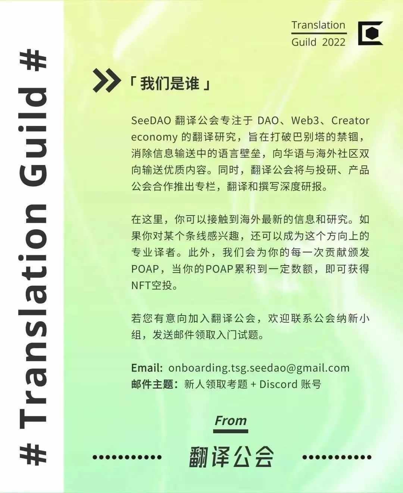

前言：本文展示了去中心化模式与生物科技行业的融合，包括生物科技行业如何在虚拟生物技术和合约研究组织的基础上在新药开发中引入云上实验室，以Perlara和噬菌体目录为例展示了如何建立去中心化网络赋权于人才，生物科技DAO是如何运作以投资项目，并在结尾鼓励了对去中心化的生物科技组织的发展模式的讨论。
从传统上来说，美国的生物科技是一个中心化的产业，大多数公司都集中在少数几个城市，并由内部科学家组成的团队进行运作。
当生物科技在二十世纪八十年代第一次站稳脚跟时，有众多的原因导致了它们的中心化结构，其中很重要的一个原因就是要在地理上接近提供人才和知识产权的大学。资金流向，日益全球化的劳动力，房地产市场，以及其他行业中去中心化模式的流行等变化，都体现了中心化作为主导方法的局限性。这些变化在过去五年间开始浮现，并在新冠大流行期间被进一步放大。
现在，去中心化正以各种方式出现在整个生物科技领域：初创公司正在传统生物科技中心之外的地方建立，共享实验室空间，跨境招聘，并在研究项目上合作。我们甚至看到传统公司之外的新型组织在有资金支持的情况下加入药物开发竞赛，如去中心化自治组织「DAO」。
去中心化的模式仍然是实验性的。但它们降低了小型公司的准入门槛，并利用了更多不同的科学家的才能，这有可能加速新药的开发，并有希望让更多人得到有效的治疗。
那么，生物科技公司是如何利用去中心化来起步的？新的创始人又如何利用它的优势来推动项目前进？根据我自己在生物科技创业公司和 DAO 的工作经验，以及与探索去中心化模式的（其中一些已经在发现新疗法方面取得了成就）生物科技领导人的对话，我综合制作了这份去中心化生物科技导读，它涵盖了这个领域目前的进展和在未来几年的发展方向。

与云上实验室协同工作
See DAO
尽管有不同的方式可以定义生物科技公司，但生物科技公司大部分都是专注于研发生物药物的小型初创公司。他们通常在公司内部进行科学研究，这么做需要有一个专门的「家庭」实验室。然而，据世邦魏理仕（一家总部位于达拉斯的商业房地产服务和投资公司）于2021年十一月的报告所言，在新冠大流行期间，实验室空间变得特别稀缺，这个现象在波士顿和其他生物科技中心的实验室尤为明显。报告说，这种对实验室的抢夺，「是对新药的全球化推动导致生命科学领域涌入大量资金和人才的自然结果」。
意识到生物科技正不断扩张而可用的地产供应逐渐减少后，一些开发商开始建立灵活的协同工作空间，以适应较小的团队，这种「WeScience」模式允许生物技术初创公司共享办公室，实验室和工作台空间，这种共享通常是按月结算的。这个领域的两个大玩家是 Biolabs 和 Alexandria LaunchLabs。
其他公司已经完全放弃了物理实验空间，·转而采用「虚拟生物科技」模式，这势必导致外包研究过程。按照这一路径发展的公司为以下一项或多项付费：
合同研究组织（CRO），如 Charles River 实验室，它们可以为生物科技公司提供一系列的支持服务，包括从临床前到临床开发和监管备案。这个 CRO 目录概述了全部可能的服务。 赞助研究协议（SRAs），生物科技公司向学术实验室付费，为临床前或临床开发进行研究。 云上实验室，诸如 Emerald 云上实验室和 Strateos ，它们是由人工智能驱动的平台，可实现小分子药物发现等功能的自动化，并实现了由研究人员远程停止或开始试验的功能。
长寿公司 Loyal 展示了虚拟生物技术的实际应用。Loyal 公司的科学家团队负责监督主要由 CRO 进行的临床前长寿研究。为了将「这些来之不易的知识普及给当前和未来的生物科技公司创始人们」，Loyal 公司的首席执行官和创始人 Celine Halioua 写了 关于使用 CRO 的成本和注意事项，并进行了 CRO 与公司内部实验的成本比较。
虚拟生物技术有几个明显的缺点。首先，其进行科学实验的过程将更加僵化，因为它需要预先计划。原始创新更多地来自于科学家在自己的实验室里自由地进行实验，而采用严格的计划可能会导致公司原始创新的减少。另一个问题是，对于新的创始人来说，CRO 的使用本身可能是很棘手的。不同的 CRO 长于不同的功能（比如剂量探索研究），而创始人依旧依靠于口碑推荐来决定他们要雇佣哪个 CRO 。因此，要在行业内拥有一个丰富的人际网络才能够获取到这些信息。此外，在云上实验室方面，有能力进行定期实验的大型制药公司往往会用尽平台的带宽。在实践中，对于初创公司来说，如何获得云上实验室的资源可能是一个问题。
幸运的是，这些缺陷并非不可克服。Science Exchange 是一个于 2011 年推出的平台，为用户使用 CRO 服务提供了很大的便利。通过它创造的交易市场，公司可以从 3500 多个供应商处寻找，订购和支付科学服务，同时，这也减少了通常需要的合同解除。LabDAO 是另一家致力于填补研究准入空白的公司；它正在建立一个交易市场，在这个交易市场中，小型初创企业和学术研究人员可以找到微型 CRO （规模较小的合同研究组织），以提供生物信息学分析，自动克隆和结构设计等服务。我们距离拥有像生物科技领域的 AWS 这样的东西还有很长的路要走。但是像 Science Exchange 和 LabDAO 这样的平台正逐步改善对基于合同的研究的访问。

赋权于人才
See DAO
在不久之前，生物科技初创企业还需要通过与现有的制药巨头合作，或是从生物科技风投公司筹集资金，以获得早期投资。与其他类型的初创公司创始人相比，在生物科技行业，拥有在行业中数十年经验的高管更受青睐。但是，在过去几年里，该行业中发生了巨大的范式转移，其主要体现在以下两个方面，即：以创始人为核心的生物科技创业和去中心化科学。这两者都体现着推进初创公司及其科学研究所需的信息民主化。
虽然风险投资仍是重要的资金组成部分，但今天的创始人们比起已经成熟的生物科技公司所拥有的选择之外还有更多资金选择。科技风险投资公司已经加大了对生物技术的投资，特别是对那些有着较为年轻、不太传统的创始人的初创公司。为了赢得那些广受追捧的初创企业的青睐，更多的基金不仅开出支票，还为创始人提供实际的业务帮助和进入强大的创始人社群的机会。
Petri，一个由 Pillar VC 创立和资助的生物科技孵化器，就是这种方法的一个例子。Petri 为科学家创业者提供了一个名为 Frequency 的创业课程，该课程将参与者引入社区的 Slack 频道，这样创业者们就可以在整个创业过程中相互联系，相互帮助。另一个例子是 Axial ，其创始人 Joshua Elkington 主办了一个生物科技 Slack 社区，在这个社区里可以讨论从基因疗法到招聘的各种信息。它有超过一万名成员，而这个数字还在不断增加。
还存在着很多其他社区驱动资金的例子，这表明生物科技投资者不再充当金融化和信息化的守门人。这与去中心化的概念不谋而合，因为它使得更多的公司在更多样化的创始人的领导下成型，并彼此分享知识。

合作新境界
See DAO
我们也开始看到科学家们和企业家们组成新型的去中心化团队来实现他们的共同目标。在生物科技领域，一个关键问题是这些网络是否能带来功能性的治疗。而以下两个研究案例表明它们们可以。
第一个案例涉及到 Perlara PBC， 第一个生物科技公益公司，由生物学家 Ethan Perlstein 领导。Perlara 的前身是 Perlstein，它曾经是一家典型的中心化湾区生物科技公司，专注于在药物再利用研究中挖掘罕见病的治疗方法。而后，在2020年，它作为 Perlstein 所称的 "Perlara 2.0 "重新出现，它拥有一个去中心化的科学家-顾问团队，他们协同工作，为患者家庭和寻找疗法的基金会提供治疗的路线图。
该小组详细跟踪某一罕见病的药物开发现状，还为确定治疗方法（通常依靠 CRO 公司，如 Charles River Labs）的研究制定了项目管理计划。它可以监督从采购药物到拆分如 Maggie’s Pearl 这样的公司的一切事务，然后他们可以拥有药物资产，并监督临床测试的进展。Perlara 的首次成功治疗并非一蹴而就——它花费了数年时间，从早期的药物再利用研究出发，到在两名患者身上显示出疗效的小型实验，最后到三期临床实验（即开始招募患者）。但 Perlstein 希望这个模板可被复制到整个 Perlara 项目中，应用于其他患者群体。
Phage Directory（噬菌体目录） 是另一个去中心化科学家小组，他们共同工作以确定治疗方法。Phage Directory 的想法开始于一条推文：来自加州大学圣地亚哥分校的流行病学家 Steffanie Strathdee 向噬菌体研究人员发出呼吁，请求帮助寻找一种可用于一名25岁的似乎对抗生素有抗药性的感染的病人的疗法。（此前，Strathdee 曾为她的丈夫 Tom 协调过一次噬菌体治疗，并在他们的书《完美捕食者》中详细介绍了这一经历。）
这条推文给了微生物学家 Jessica Sacher 和她的伙伴一些灵感。她们看到了一个可以在未来的「噬菌体狩猎」中优化社区协调的机会，并着手创建一个可能掌握着其他病人的治疗关键（或噬菌体疗法）的研究者名单。

DAO 资助的项目
See DAO
最后，在去中心化生物科技领域中还有一家叫 Molecule 的公司不容错过，这是一家正在为 web3 的生物科技铺平道路的公司。一位生物医学研究员 Tyler Golato 和一位工程师 Paul Kohlhaas 在2019年，以建立一个全新的系统来支持早期药物的开发为目标而共同创立了 Molecule。该公司已经取得了令人印象深刻的进展：他们将研究资产作为 IP-NFT 在区块链上出售的想法实现了购买转译研究（译者注：用来形容将实验室的研究成果应用在新的人体研究或临床测试上以发展预防、诊断或治疗疾病的过程）的新方式。更重要的是，Molecule 已经推出了三个生物科技 DAO，在这种情况下，它们作为新的集体或合作社发挥作用，以吸引来自互联网各个角落的社区成员。
在 VitaDAO，即 Moleclue 以长寿为目的的 DAO 中，社区的运作就像一个附带强大的内容、营销引擎的风险投资基金。一个交易流程工作组（由科学家和投资人等人组成）评估项目，以便后续投放资金。社区的决定主要由使用 VITA 代币的进行的投票作出，且大部分工作都是「公开进行的」，这意味着任何有互联网使用经验的人都可以加入 DAO 的 Discord 服务器或是其他工作小组，或只是观察社区的工作情况。
像 VitaDAO 这样的生物科技 DAO 的一个主要吸引力是他们可以快速完成工作。在启动后的十个月里，VitalDAO 已经评估了 60 多个研究提案，并为 10 个项目中价值近 200 万美元的研究提供了资金。这就像拿着美国国立卫生研究所的研究项目补助金（通常给予一个实验室每年 25 万美元，并持续 5 年） 并把钱分给 60 个实验室的项目。（你可以在其社区和财政报告里读到更多关于该组织的进展情况。）另一个生物科技 DAO 的优势是它没有传统生物科技公司那样的招聘限制，这意味着有着不同经验的、处于职业生涯的不同阶段的人，都可以参与一个 DAO 的运作 —— 如果他们愿意甚至可以加入多个 DAO，因为 DAO 并没有关于排他性的预期。此类雇佣的益处与传统的全日制工作不同：你的酬劳可能以项目代币、以太坊（甚至是感激之情）来支付，而非美元。但是，对于那些有时间的人来说，为生物科技 DAO 工作提供了一个有科学投入，团队合作和创新的乐园，甚至是一个学习新技能，比如内容和营销的乐园。
欢迎批评，展望未来
See DAO
一些专家对去中心化生物科技持批评态度。对中心化系统的支持有着合理的理由；也许在某些情况下，科学家在公司内部进行的研究会更便宜，或在各自为战的小团队中工作会更有效率。我们应预测并讨论任何善意的批评，以改进正在涌现的去中心化系统。在一个理想化的世界里，我们应该测试数百种「从科研到临床应用」的方法，混合和匹配每个新企业的组成部分以获得最大化的效率。我们还没有到那一步，但我预计在未来几年会看到更多的实验。
这里有一个有说服力的，非技术性的理由来支持探索正在涌现的去中心化方法：生物科技公司的业务是寻找新的疗法，这极有希望给需要它们的病人带来治疗。为什么不优化药物开发流程的每个部分，以便更快，更容易地在全球范围内分享研究成果？如果我们唯一要失去的是为这些运转多年的，有着很高进入门槛的中心化系统，那我们就有更多理由去测试新的系统了。

原文作者：Jocelynn Pearl
译者：saku
校对：sirs
排版：SuanNai
图片来源于网络，如有侵权，请联系删除。
